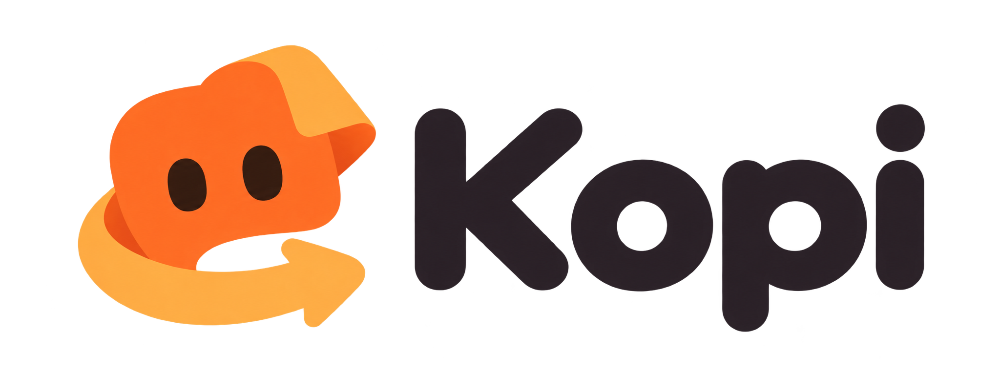

Show the routine.
Start observing and do one complete task in your usual browser. Kopi learns from the steps you choose to share.

The little browser tasks that eat up your day?
Make a shortcut for next time. Keep the good stuff for you.
Windows x64 · Local AI · Early preview
YOUR EVERYDAY, WITH A FEW FEWER CLICKS.
A little helper for the way you already work.Workflow illustration
NO BIG PROCESS. JUST YOUR PROCESS.
No workflow diagrams to build from scratch.
Start with one complete browser task.
Start observing and do one complete task in your usual browser. Kopi learns from the steps you choose to share.
Review the goal, inputs and destination. Answer anything uncertain, refine the steps, then approve your workflow.
Open a new page and preview your saved workflow with fresh details. Approve the run and get back to your day.
FAMILIAR FEELS BETTER.
Keep your existing Chrome or Edge session. Pair the companion extension and work right where you're already signed in.
The downloadable preview runs Gemma on your computer. Browser evidence isn't sent to a cloud AI service.
Recording is opt-in. See the steps before saving, and turn uncertain details into answers.
A LITTLE LESS BUSYWORK.
Keep the work that needs you.
Make a shortcut for the rest.
Windows x64 · 16 GB RAM recommended · About 3.4 GB for local AI setup
Published preview: v0.1.1. Automatic verification work is not included in this release. This early preview needs real-account validation. Unsigned builds may show a Windows warning.